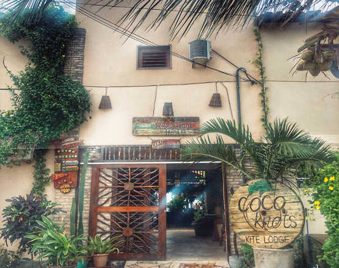

Nosso Conceito
Faça uma pausa, acalme-se e faça kitesurf sempre que o clima o levar.
A Ilha do Guajiru é uma linda, remota e segura praia de surfe em um dos locais mais arenosos do Brasil. Uma excelente localização para os praticantes de kitesurf independentes que gostam de um acesso fácil ao seu spot de kitesurf. Aqui você pode praticar kitesurf sempre que o clima o levar em um ambiente sociável e um belo lugar para se acalmar, relaxar e entrar em contato com outros amantes de kitesurf de todo o mundo.
Venha e desfrute da nossa deslumbrante vista para o mar, com mesas ao ar livre e redes onde você pode relaxar sob as palmeiras com um coco fresco na mão enquanto ouve o vento assobiando acima.
Coco-Knots Kite Lodge é uma pousada descontraída cercada por palmeiras, em frente à nossa famosa lagoa de kitesurf. O vento sopra todos os dias e é um local perfeito para iniciantes em kitesurf e pilotos avançados.
Nossa pousada é uma combinação de Kite-Pousada & Backpacker-Kite-Hostel. Oferecemos quartos privados espaçosos com uma incrível vista para o mar ou quartos acolhedores com cama compartilhada para um orçamento de viagem justa. Ambas as opções incluem nosso buffet de café da manhã servido com uma diversidade internacional de seleções tropicais brasileiras e variedades típicas européias.
Estamos oferecendo uma área de kite, uma área de gras para lançar, pousar e estacionar sua pipa, um restaurante e bar de praia, uma área de lounge gelada, WiFi gratuito em toda a área, violão para os amantes da música e claro grátis kitesurf entretenimento em frente a nossa lagoa.
Nós somos mais do que apenas um lugar para dormir:
Nosso conceito é fornecer um lugar sociável onde você tem a chance de conhecer outros kitesurfistas, sair e trocar dicas de viagem, relaxar em um ambiente confortável de kite surf e desfrutar de um estilo de vida saudável e tranquilo.
Se isso é algo que você está procurando por favor entre em contato conosco ou sinta-se livre para passar e confira o mais novo Kite Lodge na cidade - Coco-Knots Kite Lodge.

